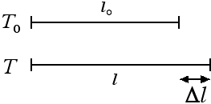

Temperatura e dilatazione termica
Dilatazione lineare
Come abbiamo detto nella precedente sezione, uno dei principi fisici su cui si basa la misura della temperatura con un termometro clinico è la dilatazione termica che in questa sezione andremo ad analizzare un po' più in dettaglio. Quando vengono riscaldati i corpi si dilatano. Consideriamo ad esempio un'asta di lunghezza l0 a una temperatura iniziale T0. Portiamo l'asta a una temperatura finale T in modo tale che la variazione di temperatura sia uguale a ΔT = T - T0. L'asta si allungherà di una quantità pari a Δl, come indicato nella figura seguente:

Sperimentalmente si verifica che l'allungamento Δl è direttamente proporzionale alla lunghezza iniziale dell'asta l0 e alla variazione della temperatura ΔT, ossia Δl = λ l0 ΔT. Il coefficiente di proporzionalità λ prende il nome di coefficiente di dilatazione lineare. Dal momento che λ = Δl / (l0 · ΔT) avremo che il coefficiente di dilatazione lineare si misura in °C-1 oppure in K-1 ed è numericamente uguale all'allungamento di una barra avente lunghezza 1 m quando viene riscaldata di 1 °C.
Il coefficiente di dilatazione lineare dipende dalla sostanza che prendiamo in esame. Nella tabella seguente riportiamo i valori di λ per alcune sostanze:| Sostanza | Piombo | Alluminio | Ferro | Acciaio |
| λ (°C-1) | 2.9·10-5 | 2.3·10-5 | 1.2·10-5 | 1.2·10-5 |
La legge della dilatazione lineare può essere anche riscritta in termini della lunghezza finale l dell'asta: come segue: l = l0 + Δl = l0 + λ l0 ΔT = l0 (1+ λ Δt).
Con la legge della dilatazione termica lineare possiamo ad esempio calcolare di quanto si allunga un binario ferroviario in acciaio lungo 36 m quando viene sottoposto a un'escursione termica pari a 30°C. Avremo Δl = λ · l0 · ΔT = 1.2 · 10-5 °C-1 · 36 m · 30°C = 0.013 m. La dilatazione termica comporta un allungamento del binario di circa 1.3 cm. Questo è il motivo per cui solitamente, nel costruire una rete ferroviaria, vengono lasciati degli spazi vuoti tra un binario e il successivo. Accorgimenti simili devono essere presi anche nel costruire un ponte, dal momento che il cemento armato ha coefficiente di dilatazione lineare λ = 1.4 · 10-5 °C-1.
Un'utile applicazione della dilatazione termica è costituita dalla lamina bimetallica, costituita da due strati sovrapposti di metalli aventi coefficienti di dilatazione lineare diversi. Quando una lamina bimetallica viene riscaldata si piega in maniera da garantire al metallo con λ maggiore una dilatazione termica maggiore, ossia con la convessità dalla parte del materiale più dilatabile. Le lamine bimetalliche possono essere utilizzate ad esempio come elementi di un termostato: infatti piegandosi possono aprire il circuito elettrico del termostato e spegnere l'impianto di riscaldamento di una casa.